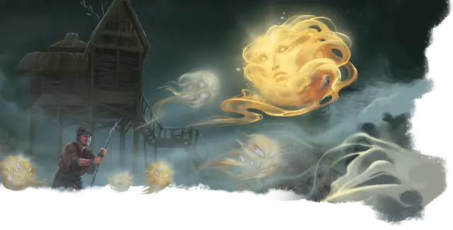

Блуждающий огонёк
Will-o’-Wisp
Крошечная Нежить, Хаотичная Злая

Класс Защиты 19 Инициатива +9 (19)
Хиты 27 (11к4)
Скорость 5 футов, Полёта 50 футов (парит)
| мод | спас | ||
|---|---|---|---|
| СИЛ | 1 | −5 | −5 |
| ЛОВ | 28 | +9 | +9 |
| ТЕЛ | 10 | +0 | +0 |
| мод | спас | ||
|---|---|---|---|
| ИНТ | 13 | +1 | +1 |
| МДР | 14 | +2 | +2 |
| ХАР | 11 | +0 | +0 |
Сопротивление урону Дробящий, Колющий, Рубящий, Кислота, Некротический, Огонь, Холод
Иммунитеты Электричество, Яд; Бессознательный, Истощение, Окаменевший, Опрокинутый, Опутанный, Отравленный, Парализованный, Схваченный
Чувства Тёмное зрение 120 футов, пассивное Восприятие 12
Языки Общий
Опасность 2 (450 опыта; БВ +2)
Особенности
Эфемерность. Блуждающий огонёк не может ничего носить и держать.
Свечение. Блуждающий огонёк испускает Яркий свет в радиусе 20 футов и Тусклый свет ещё на 20 футов.
Бестелесное перемещение. Блуждающий огонёк может перемещаться через других существ и объекты, как если бы они были Труднопроходимой местностью. Он получает 5 (1к10) Силового урона, если завершает свой ход внутри объекта.
Действия
Шок. Бросок рукопашной атаки: +4, досягаемость 5 фт. Попадание: 11 (2к8 + 2) урона Электричеством.
Бонусные действия
Поглощение жизни. Спасбросок Телосложения: Сл 10, одно живое существо с 0 Хитами, видимое огоньком в пределах 5 футов. Провал: Цель умирает, а огонёк восстанавливает 10 (3к6) Хитов.
Исчезновение. Огонёк и его свет становятся Невидимыми, пока огонёк сохраняет Концентрацию на этом эффекте. Она прекращается досрочно, если огонёк совершит бросок атаки или использует Поглощение жизни.
Бонус мастерства +2
Среда обитания Болота, Город, Леса
Сокровища Отсутствуют
Блуждающий огонёк
Проводник на пути к погибели
Издалека блуждающие огоньки напоминают фонари, раскачивающиеся в темноте. Сквозь окна заброшенных строений или за поворотами коварных троп эти духи ведут любопытных к их гибели. Когда же жертва становится беззащитной, блуждающие огоньки пожирают её жизненную силу.
Совершите бросок по таблице «Засада блуждающего огонька» для вдохновения или выберите сами, как огонёк подстерегает свою жертву.
Засада блуждающего огонька
| 1к6 | Блуждающий огонёк ведёт жертву… |
| 1 | В готовые обрушиться развалины. |
| 2 | В засаду, устроенную голодными упырями или вампирами. |
| 3 | В жуткие руины, накладывающие проклятие на вошедших в них. |
| 4 | В логово хищника, такого как медведь или виверна. |
| 5 | К участку бурой плесени или зелёной слизи. |
| 6 | К зыбучим пескам или пруду, покрытому тонким льдом. |